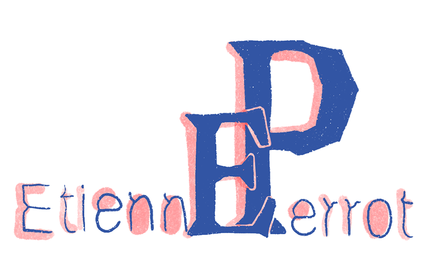
-Online portfolio-
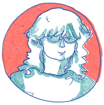
Inventaire des mauvaises transactions
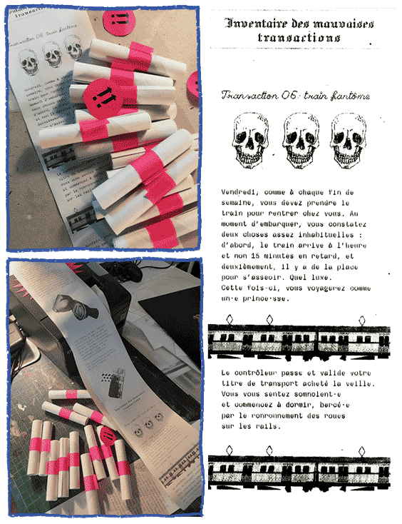
Rêve-Party

La troupe de la manuf'
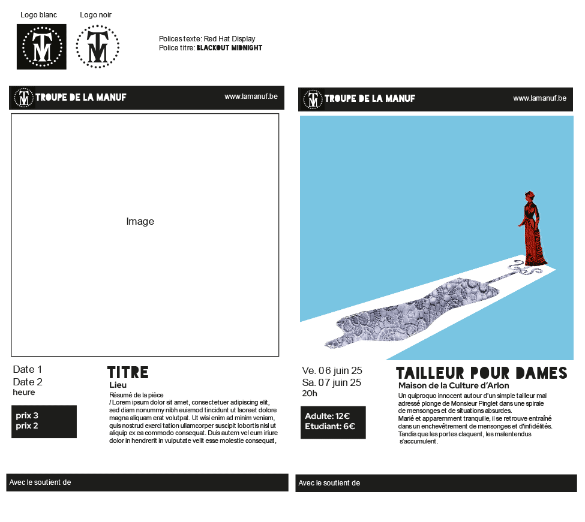
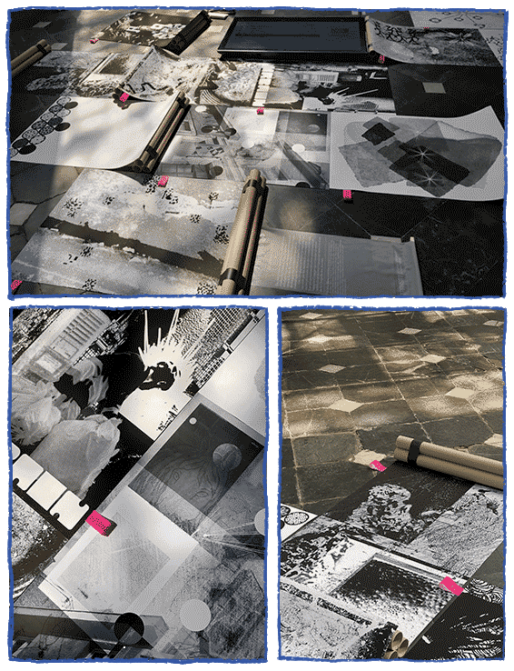
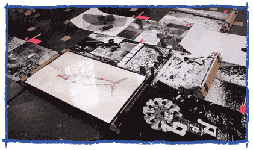
Prompto
Scénographie et installations
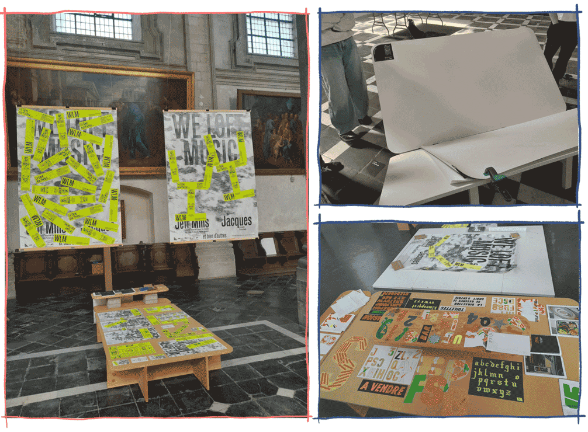
Le surrendettement
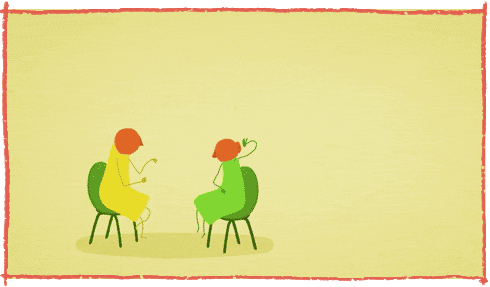
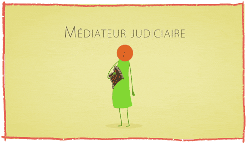
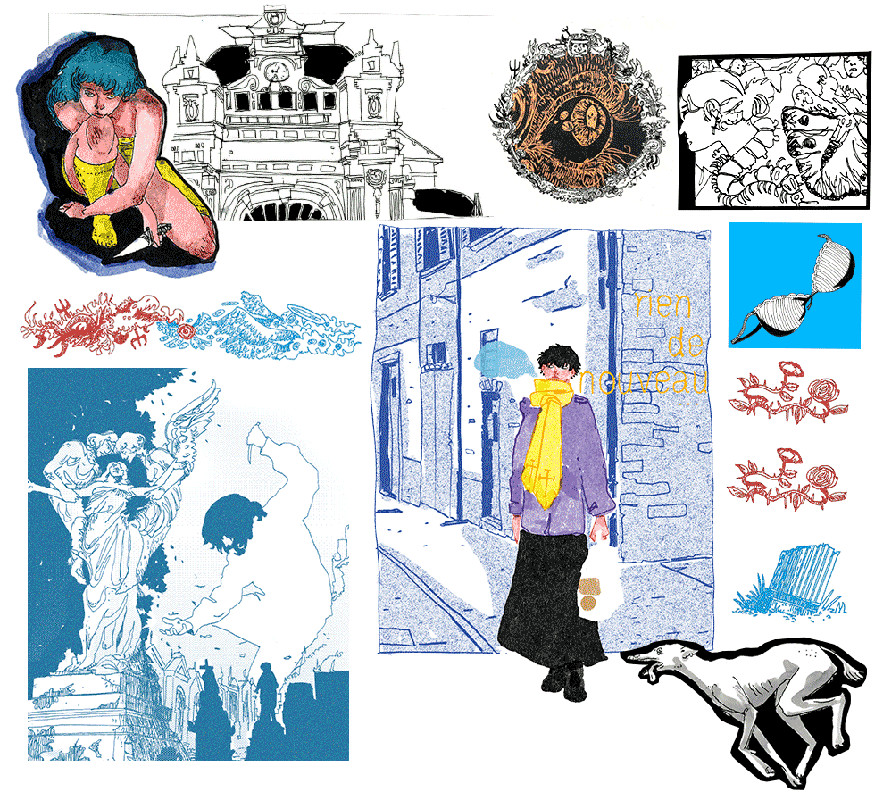
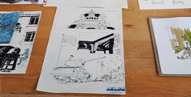
Maitrank 2024
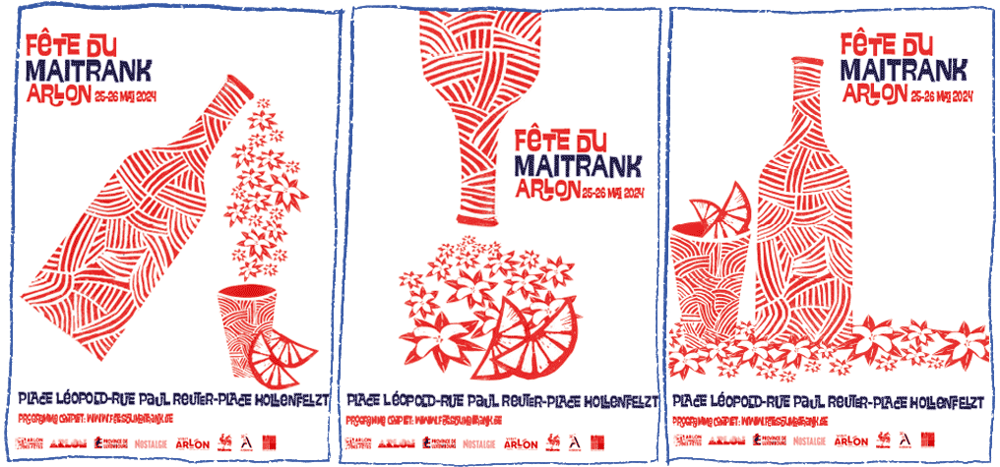
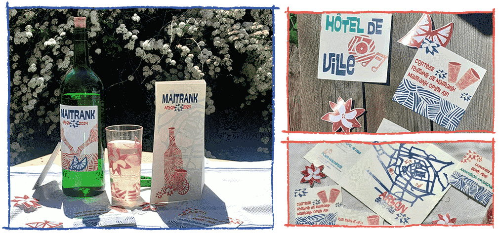
Microfilm

Packaging
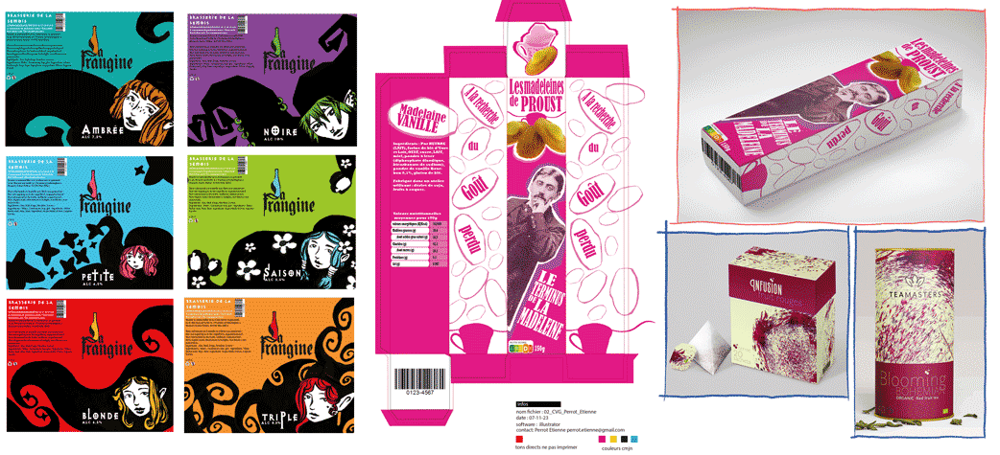
Atlas sensible
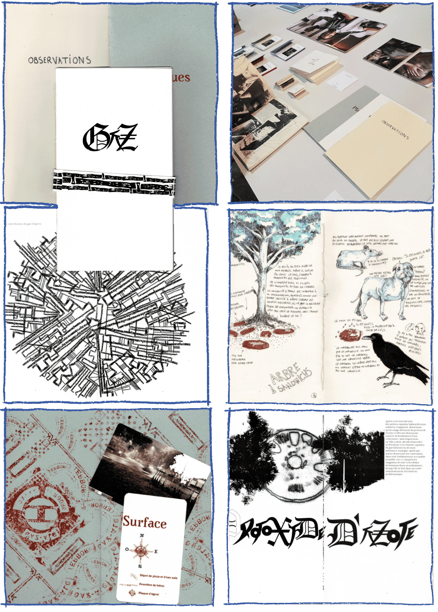